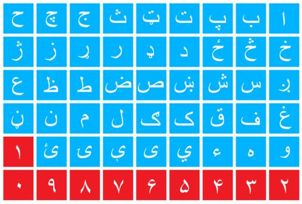

Talen Van Afghanistan
Het Dari (sinds 1964) en het Pashto (sinds 1933) zijn de officiële talen van Afghanistan, waarvan
Dari het meest gebruikt wordt als 'lingua franca' voor inter-etnische communicatie. Net als Farsi worden ook Dari en Pashto geschreven
in het Arabische schrift.
Dari lijkt zozeer op Farsi, de taal van Iran, dat veel Dari-sprekende Afghanen hun taal Farsi noemen. Het belangrijkste verschil tussen de twee
talen is dat Farsi meer leenwoorden uit het Turks en Arabisch heeft. Dari, vooral gesproken door de Tadzjieken, is een Indo-Iraanse taal en een lid van de Indo-uropese taalfamilie.
Hoewel het geschreven wordt in het Arabische schrift is er verder geen enkele relatie tussen de twee talen
Pashto is de taal van Pathanen in het zuiden en oosten van Afghanistan en in Beloetsjistan en de Federaal Bestuurde Stamgebieden in het westen en noordwesten van Pakistan.
Het Pashto wordt geschreven in het Arabische schrift. De uitspraak van klinkers en medeklinkers is min of meer hetzelfde als in het Dari.
Naast het Dari en het Pashto worden er nog zo'n 25 andere talen en dialecten gesproken in Afghanistan. Tadzjieks, Uzbeeks, Turkmeens, Kirgizisch en Wakhi, de meest primitieve vorm
van het gesproken Perzisch, worden gesproken in het noorden van Afghanistan door de daar levende minderheidsgroepen. Veel Afghanen zijn tweetalig.
De voornaamste talen zijn:
- Pashto 50%
- Dari 35%
- Turkse talen (Uzbeeks, Turkmeens) 11%
- Baluchi en Pashai 4%
